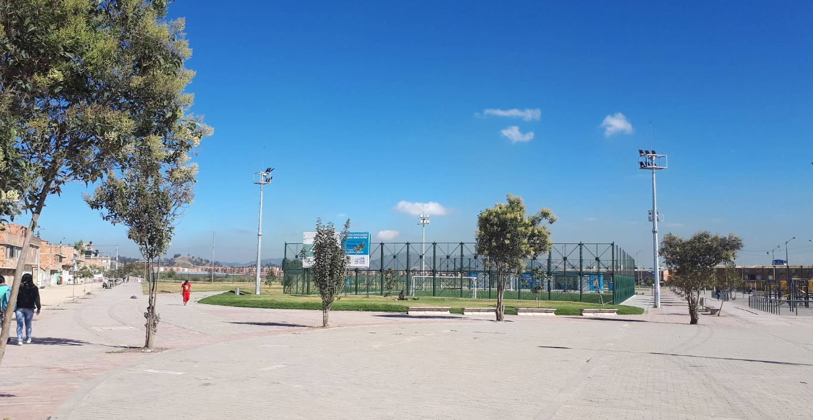
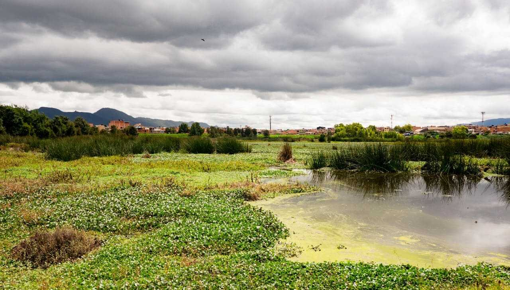

Historia y contexto del barrio
Villa Anny II es un barrio de la localidad de Bosa, en el suroccidente de Bogotá. Bosa, antiguo municipio hasta 1954, fue integrado al Distrito Capital. Su crecimiento urbano en la segunda mitad del siglo XX consolidó barrios como Villa Anny II, caracterizados por un arraigo popular y vínculos comunitarios fuertes.
En Bosa aún perduran vestigios patrimoniales como la Iglesia de San Bernardino del siglo XVII y la Estación del Ferrocarril de la Sabana, símbolos históricos clave.

Parque Zonal La Tingua de Tibanica, Bosa
El Parque Zonal La Tingua de Tibanica, ubicado en el barrio Villa Anny II de la localidad de Bosa, fue construido como parte de un proyecto de urbanización y equipamiento público aprobado mediante el Acuerdo 180 de 2007 del Concejo de Bogotá.
Este acuerdo autorizó un proyecto de valorización especial para financiar obras de infraestructura en el sector, con el objetivo de regularizar y mejorar las condiciones de vida de la comunidad. Los recursos recaudados mediante la contribución de valorización se destinaron a la construcción de vías, servicios públicos, zonas verdes y espacios recreativos, entre los cuales se encuentra el Parque Zonal La Tingua de Tibanica.
El parque fue concebido como un espacio público zonal para el esparcimiento, la recreación y la integración comunitaria, en un sector que históricamente ha enfrentado procesos de ocupación informal y falta de dotación de equipamiento urbano.
Aunque su desarrollo ha sido progresivo y ha enfrentado desafíos como el mantenimiento, la seguridad y la invasión de predios en sus alrededores, el Parque Zonal La Tingua de Tibanica sigue siendo un espacio importante para la comunidad y un ejemplo del uso de mecanismos de valorización para la construcción de bienes públicos en zonas populares de Bogotá.
Humedal Tibanica
El Humedal de Tibanica es uno de los humedales protegidos de Bogotá, con una extensión aproximada de 28,8 hectáreas. Se encuentra entre la localidad de Bosa y el municipio de Soacha, consolidado como una zona RAMSAR y parte de la estructura ecológica principal de la ciudad.
El término “Tibanica” proviene del muysccubun y significa “portal de los altares”, evocando su importancia espiritual para las comunidades muiscas.
Si bien su belleza es notable, el humedal enfrenta amenazas como la desecación progresiva, la pérdida de espejo de agua, vegetación invasora y presión urbanística.
